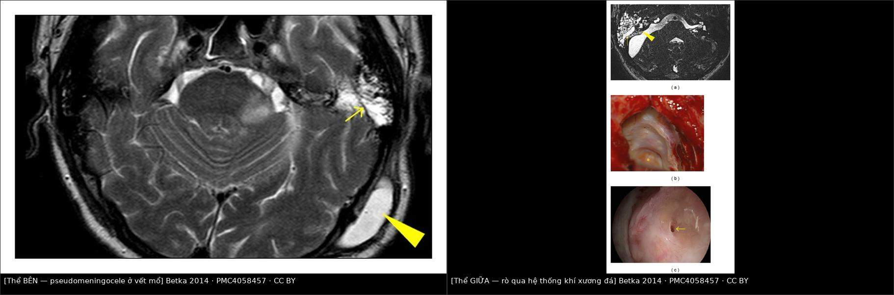
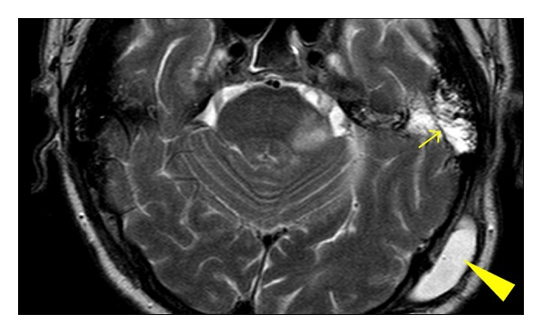
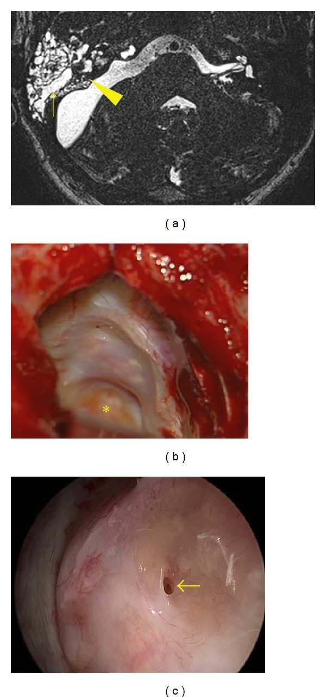

1715 — Rò dịch não tủy sau mổ xuyên mê đạo / nền sọ bên: thể bên (pseudomeningocele) vs thể giữa (rỉ mũi)
Tags: pattern:ro-dich-nao-tuy pattern:pseudomeningocele pattern:phu-neo-duoi-da pattern:tu-dich-duoi-da pattern:viem-mang-nao vung:tai vung:xuong-da vung:nen-so vung:oc-tai anatomy:oc-tai protocol:MRI-T2-CISS protocol:HRCT-xuong-thai-duong protocol:dan-luu-that-lung
Mức chắc chắn (certainty): tổng hợp y văn (literature synthesis) — 1 loạt 333 ca mổ u dây VIII có ảnh MRI phân biệt thể bên/thể giữa (Biomed Res Int 2014, PMC4058457, CC BY), 1 loạt 1.006 ca u dây VIII (Acta Otorhinolaryngol Ital 2016, PMC5225797), 1 tổng quan 50 năm phẫu thuật nền sọ bên (Acta Otorhinolaryngol Ital 2019, PMC6540636), 1 tổng quan hình ảnh rò dịch não tủy (PMC5761172) + 1 nghiên cứu 182 bệnh nhân về β2-transferrin (PMID 15492165). Không có thử nghiệm ngẫu nhiên về thời điểm mổ lại/dẫn lưu — chỗ suy luận ghi rõ.
Câu chốt: sau mổ xuyên mê đạo, khoang dưới nhện thông trực tiếp với hệ thống khí xương đá và vết mổ. Dịch não tủy đi ra theo hai đường — thể bên: ra vết mổ/dưới da thành pseudomeningocele, thường tự khỏi (chọc hút ± keo sinh học); thể giữa: qua hệ thống khí → tai giữa → vòi nhĩ → mũi, đây là thể phải mổ lại, vì đường ra không bao giờ tự bịt và mỗi ngày rò là một ngày nguy cơ viêm màng não. Phân biệt bằng hình thái + vị trí + xét nghiệm β2-transferrin, không bằng "chảy nhiều hay ít".
1. Tổng quan bệnh học – cơ chế hình ảnh (TẠI SAO)
1.1 Dịch tễ
- Rò dịch não tủy (CSF leak) là biến chứng thường gặp nhất của phẫu thuật u dây thần kinh VIII, các loạt gần đây 2–10,6% (PMC6540636).
- Loạt 1.006 ca (1990–2006): rò dịch não tủy 9%, viêm màng não 1,2%, mổ lại vì rò 1,9%; rò giảm dần 11,6% → 9,7% → 7,1% (p < 0,01) và mổ lại 3,4% → 0,9% (p < 0,05); viêm màng não mủ 1,9% → 1,3% → 0,7% (PMC5225797).
- Theo kích thước u (cùng loạt): rò 5,0% (độ 1) · 7,4% (độ 2) · 9,5% (độ 3) · 14,7% (độ 4) — u lớn là yếu tố nguy cơ độc lập (PMC5225797).
- Đường mổ quyết định kiểu rò: với xuyên mê đạo (translabyrinthine), rò qua vết mổ chiếm 54%; với sau xoang sigma, rỉ mũi chiếm 68%; với hố sọ giữa, rỉ mũi 70% (Mangus, trích trong PMC4058457).
- Kỹ thuật tốt làm giảm mạnh: 1.803 ca xuyên mê đạo liên tiếp với bịt mê đạo bằng mỡ + đóng kín → rò < 1% (Merkus, trích trong PMC5225797); ghép mỡ so với cơ để bịt tế bào khí xương đá: 2,2% vs 5,7% (420 ca, PMC4058457).
1.2 Sinh lý bệnh — ba "cửa" có thể hở
- Cửa mê đạo (medial): mở ống tai trong → rách màng não → khoang dưới nhện thông với mê đạo và các tế bào khí quanh ống tai trong. Nếu mảnh mỡ/cân không bịt kín bờ sau lỗ mở ống tai trong (nơi màng não mỏng nhất), dịch đi vào hệ thống khí.
- Cửa tế bào khí (giữa): tế bào khí xương đá chưa được trám sáp xương/mỡ → dịch chạy vào tai giữa, rồi qua vòi nhĩ ra mũi (người bệnh thấy nước trong chảy một bên mũi, tăng khi cúi/khịt mũi) hoặc ra ống tai ngoài nếu màng nhĩ/vách ống tai không kín.
- Cửa vết mổ (lateral): đóng cân–cơ–da không kín hoặc không có lớp mỡ bịt → dịch tụ dưới da thành pseudomeningocele (khối phồng, căng, không đau, dễ bị chọc nhầm là "tụ dịch").
- Vì sao thể bên hay tự khỏi: đường rò ngắn, dưới da, áp lực mô mềm + băng ép làm dịch ngừng; cơ thể tạo phản ứng xơ bịt lại. Trong 333 ca, 208/333 (62,5%) có thể bên và 205/208 khỏi chỉ bằng chọc hút ± keo sinh học + băng ép (84 người cần 1–6 lần keo); mổ lại < 1% (PMC4058457).
- Vì sao thể giữa KHÔNG tự khỏi: đường rò là ống cứng (tế bào khí + vòi nhĩ) thông với khoang mũi vô khuẩn bẩn; chênh áp giữa khoang dưới nhện và mũi không bao giờ bằng 0, và nhiễm khuẩn đi ngược dễ dàng. Trong 333 ca chỉ 2 ca (0,6%) thể giữa nhưng cả 2 phải mổ lại (PMC4058457).
1.3 TẠI SAO nhìn thấy trên MRI/CT (vật lý)
| Đại lượng | Con số / đặc điểm | Ý nghĩa đọc phim |
|---|---|---|
| Tín hiệu dịch não tủy trên T2W | Rất sáng (T2 dài ~1.000–2.000 ms), đồng tín hiệu với dịch não thất | Nước trong tế bào khí cùng tín hiệu dịch não tủy = nghi rò |
| Mỡ ghép trên T1W không fat-sat | Sáng | Phân biệt mỡ ghép với dịch: T1 sáng = mỡ, T1 tối + T2 sáng = dịch |
| Mỡ ghép trên T2W | Sáng (như dịch) | Không dùng T2 một mình để kết luận rò |
| Dịch não tủy trên CT | 0–15 HU | Không phân biệt được với dịch tiết/thanh dịch — CT chỉ để xem xương, khí, vị trí mỡ ghép |
| Khí nội sọ | −1.000 HU | Pneumocephalus sau dẫn lưu quá mức — dấu hiệu cảnh báo |
| β2-transferrin | Dương tính = có dịch não tủy; cần 0,5 mL dịch | Xét nghiệm đặc hiệu (không có trong nước mũi/nước tai bình thường) |
- Vì sao cần T2 lát mỏng 3D (CISS/FIESTA/DRIVE): đường rò chỉ 1–2 mm, chạy qua các tế bào khí có vách xương mảnh; lớp 3D 0,5–1 mm cho thấy dải dịch liên tục từ ống tai trong ra vòi nhĩ — đây là dấu chốt hình ảnh.
- Vì sao T1 không fat-sat là bắt buộc: mảnh mỡ ghép sáng trên T1 đúng vị trí lỗ mở ống tai trong; nếu mỡ đã di trú/teo thì chỗ đó T1 tối, T2 sáng — tương ứng lỗ rò hở.
2. Mẫu hình + chẩn đoán phân biệt theo vị trí (Gamut)
- Theo vị trí dịch thoát ra:
- Vết mổ / dưới da (thể bên) → pseudomeningocele;
- Mũi một bên (thể giữa) → qua vòi nhĩ;
- Ống tai ngoài (thể giữa biến thể) → qua màng nhĩ/vách ống tai đã bịt;
- Họng (hiếm) → dịch chảy xuống, bệnh nhân chỉ ho/khó chịu khi nằm, không thấy nước ra ngoài.
- Theo thời điểm: sớm < 7 ngày (kỹ thuật đóng kín chưa hiệu lực) vs muộn 1–6 tuần (mỡ teo, nhiễm khuẩn nhẹ, tăng áp lực nội sọ). Rò muộn phải tìm tăng áp lực nội sọ (béo phì, ngưng thở khi ngủ) và nhiễm.
- Nhóm "rò + sốt/đau đầu": không chờ — viêm màng não cho tới khi loại trừ; chọc dở khoang dưới nhện khi chưa loại trừ tăng áp lực.
- Nhớ 3 tầng: "Mê đạo – Tế bào khí – Vết mổ": mỗi tầng có cách xử lý khác nhau (bịt lại lỗ mê đạo / trám tế bào khí + bịt vòi nhĩ / khâu lại + dẫn lưu).
3. Bảng so sánh phân biệt (ma trận đối chiếu)
| Thực thể (entity) | Hình ảnh điển hình | Chốt vào (rule-in) | Chốt loại (rule-out) | Gợi ý xác nhận |
|---|---|---|---|---|
| Rò thể bên (pseudomeningocele) | Khối dưới da vết mổ, căng, T2 sáng đồng tín hiệu dịch não tủy, T1 tối, không ngấm; có cổ thông với khoang dưới nhện | Khối dưới da + cổ thông + β2-transferrin dương | Khối T1 sáng (mỡ ghép/di chứng), không cổ thông → không phải rò | MRI T1 + T2; siêu âm tại giường; chọc hút dưới vô khuẩn |
| Rò thể giữa (rỉ mũi qua vòi nhĩ) | Dải dịch T2 sáng từ ống tai trong → tế bào khí → tai giữa → vòi nhĩ; mờ tế bào khí; có thể khí nội sọ | Dải dịch liên tục trên T2 3D + nước trong một bên mũi + β2-transferrin dương | T2 các tế bào khí tối, không có dải liên tục → không rò | MRI T2 3D lát 0,5–1 mm; CT xương đá; nội soi mũi |
| Seroma/thanh dịch vết mổ | Khối dưới da T1 tối, T2 sáng, không cổ thông, β2-transferrin âm | β2-transferrin âm + không thấy đường rò | β2-transferrin dương hoặc cổ thông → là dịch não tủy | Xét nghiệm dịch; MRI |
| Mỡ ghép di trú/teo | Mỡ ghép T1 sáng lệch vị trí; không có dịch T2 sáng mới | T1 sáng = mỡ, không có dải dịch | T1 tối + T2 sáng tại lỗ mê đạo → nghi hở | So phim MRI sau mổ sớm |
| Nhiễm khuẩn vết mổ | Dày da, ngấm thuốc, khí trong mô mềm, dịch đục | Sốt + dịch đục + khí trong mô mềm | Dịch trong, β2-transferrin âm → không phải rò | Cấy dịch; CT; kháng sinh |
| Tụ máu vết mổ | T1 sáng, T2 tối/sáng tùy tuổi máu, không có cổ thông | T1 sáng (methemoglobin) + không có dải dịch | T1 tối + T2 rất sáng + β2-transferrin dương → rò | MRI; theo dõi |
| Rò dịch não tủy do tăng áp lực nội sọ (rò "tự phát" kiểu nền sọ trước) | Rò nhiều đợt, tái phát sau vá; rỗng tuyến yên, hẹp xoang tĩnh mạch | Rò tái phát + dấu hiệu tăng áp lực nội sọ | Áp lực bình thường, một đợt sau mổ → rò do kỹ thuật | MRI não; đo áp lực mở khi chọc; cân nhắc shunt |

Trái: thể bên — T2W axial: pseudomeningocele ở vết mổ chẩm (mũi tên đầu lớn) + dịch não tủy lấp hệ thống khí xương thái dương (mũi tên nhỏ). Phải: thể giữa — (a) T2W: dải dịch từ ống tai trong vào tế bào khí (mũi tên đầu), mũi tên nhỏ chỉ đường rò; (b) mổ lại: lỗ rò ở bờ sau lỗ mở ống tai trong (dấu *), ống tai trong đã đóng; (c) nội soi: lỗ rò. Ảnh ghép letterbox từ 1 nguồn CC BY (PMC4058457).Ba câu hỏi quyết định xử trí
- Dịch ra đâu? (dưới da → thể bên; mũi/tai → thể giữa)
- Có nhiễm không? (sốt, đau đầu, cứng gáy, dịch đục → cấy + kháng sinh, không chờ)
- Có tăng áp lực nội sọ không? (rò tái phát nhiều đợt, đau đầu tư thế, papilledema)
4. Protocol chụp + xử trí
4.1 Chẩn đoán
- Bước 1 — xác nhận dịch là dịch não tủy: β2-transferrin (miễn dịch cố định/immunoblot) là chuẩn vàng không xâm lấn; chỉ cần 0,5 mL dịch là đủ; đây là xét nghiệm đặc hiệu cho dịch não tủy người (PMC5761172; Warnecke 2004, PMID 15492165). Glucose/que thử không dùng để khẳng định (dương/âm giả nhiều).
- Bước 2 — tìm đường rò: MRI T2 3D lát mỏng 0,5–1 mm (CISS/FIESTA/DRIVE) + T1 không fat-sat để phân biệt mỡ ghép với dịch; CT xương đá lát ≤ 1 mm để xem vị trí mỡ ghép, tế bào khí hở, vôi hóa, khí nội sọ.
- Bước 3 — nội soi mũi khi có rỉ mũi: xác định bên và điểm chảy (thường quanh vòi nhĩ sau mổ nền sọ bên).
- Với rò nền sọ trước, số liệu tham chiếu: HRCT độ chính xác 92% (Se 92%/Sp 100%), MR cisternography 89% (Se 87%/Sp 100%); khi nhiều ổ khuyết xương, hợp nhất CT + MRI giúp định vị (PMC5761172). Không suy rộng số này cho rò sau xuyên mê đạo.
4.2 Xử trí (thực hành, không có RCT)
- Thể bên (pseudomeningocele) — điều trị bảo tồn trước:
- Băng ép + nằm đầu cao 30°, tránh rặn/khịt mũi;
- Chọc hút dưới vô khuẩn ± keo fibrin vào khoang; có thể lặp 1–6 lần (PMC4058457);
- Dẫn lưu thắt lưng khi rò kéo dài > 24 giờ (đa số chuyên gia) — mục tiêu giảm áp lực để lỗ rò tự bịt; tháo sớm khi hết rò để tránh pneumocephalus và quá dẫn lưu;
- Mổ lại khi: rò > 3 ngày không giảm, pseudomeningocele tái phát nhiều lần, nhiễm, hoặc thiếu mỡ ghép trên MRI tại lỗ mê đạo.
- Thể giữa (rỉ mũi) — mổ lại sớm, không chờ:
- Vá lại lỗ mê đạo bằng mỡ/cân + trám toàn bộ tế bào khí hở, bịt vòi nhĩ bằng bó cơ/fat plug;
- Đóng kín ống tai ngoài (blind sac) nếu đường mổ đã mở ống tai;
- Dẫn lưu thắt lưng hỗ trợ ± đặt van não thất nếu tăng áp lực nội sọ.
- Kháng sinh: không dự phòng kéo dài "để chờ"; khi có dấu hiệu viêm màng não → cấy dịch não tủy + kháng sinh theo kinh nghiệm phủ phế cầu rồi theo cấy.
- Số liệu tiên lượng: rò làm nguy cơ viêm màng não tăng từ 3% lên 14% (Selesnick, trích trong PMC4058457); bảo tồn thành công tới 70% các ca rò nói chung (PMC6540636).
flowchart TD
A[Dịch trong sau mổ xuyên mê đạo/nền sọ bên] --> B[Xác nhận: beta2-transferrin, MRI T2 3D + T1 không fat-sat]
B --> C{Dịch ra đâu?}
C -->|Vết mổ / dưới da| D[Thể BÊN - pseudomeningocele]
C -->|Mũi hoặc ống tai| E[Thể GIỮA - qua hệ thống khí và vòi nhĩ]
D --> F[Băng ép + đầu cao + chọc hút ± keo fibrin]
F --> G{Hết rò trong 3 ngày?}
G -->|Có| H[Theo dõi ngoại trú]
G -->|Không| I[Dẫn lưu thắt lưng ± mổ lại bịt lỗ mê đạo]
E --> J[Mổ lại sớm: bịt lỗ mê đạo + trám tế bào khí + bịt vòi nhĩ]
I --> K[CT/MRI kiểm tra: mỡ ghép, khí nội sọ, não úng thủy]
J --> K
K --> L{Có sốt/đau đầu/cứng gáy?}
L -->|Có| M[Cấy dịch não tủy + kháng sinh phủ phế cầu]
L -->|Không| H
5. Biến thể bình thường và cạm bẫy
- Mờ tế bào khí ngay sau mổ là bình thường: máu/dịch trong tế bào khí 1–2 tuần đầu; chỉ gọi rò khi có dải dịch T2 liên tục hoặc dịch thoát ra ngoài.
- Mỡ ghép sáng T2 y như dịch: đọc T1 không fat-sat — mỡ sáng, dịch tối; trên T2 fat-sat mỡ tối còn dịch vẫn sáng.
- "Rò ra ống tai" khi ống tai đã bịt kín: gần như không thể; nếu có nước ở ống tai ngoài thì phải nghĩ dịch từ vòi nhĩ trào ra, tức thể giữa — đừng chỉ khâu da.
- Chọc hút pseudomeningocele không vô khuẩn → đưa vi khuẩn vào khoang dưới nhện; luôn vô khuẩn + xét nghiệm β2-transferrin trước.
- Dẫn lưu thắt lưng quá mức → pneumocephalus, đau đầu tư thế, tụ máu dưới màng cứng; phải theo dõi tri giác và chụp CT khi đau đầu mới.
- Rò tái phát nhiều đợt → tìm tăng áp lực nội sọ (béo phì, ngưng thở khi ngủ, hẹp xoang tĩnh mạch); vá mà không xử lý áp lực thì sẽ rò lại.
- Viêm màng não có thể xuất hiện TRƯỚC khi thấy rò: sốt + đau đầu sau mổ nền sọ bên = cấy dịch não tủy, không chờ dịch chảy.
6. Tự lượng giá — Blind Quiz
Ca 1 — Bệnh nhân sau mổ u dây VIII đường xuyên mê đạo, ngày 5 thấy khối phồng căng ở vết mổ sau tai, không sốt.

- Gợi ý: khối phồng tăng khi cúi, không đau, không rỉ mũi.
- Câu hỏi: Đây là thể nào của rò? Vì sao không cần mổ lại ngay? Hai dấu hiệu trên ảnh?
Bấm để hiện đáp án (findings + chẩn đoán)
- Dấu hiệu: pseudomeningocele dưới da vùng chẩm (mũi tên đầu lớn) + dịch não tủy lấp hệ thống khí xương thái dương (mũi tên nhỏ) — đường rò ngắn ra vết mổ.
- Chẩn đoán: thể bên — chiếm 62,5% các rò trong loạt 333 ca; 205/208 khỏi bằng chọc hút ± keo + băng ép, mổ lại < 1%.
- Vì sao không mổ ngay: đường rò dưới da, băng ép + giảm áp hiệu quả; mổ lại khi rò > 3 ngày/tái phát/nhiễm.
- Nguồn ảnh: Betka J và cs., Biomed Res Int 2014 (PMC4058457), CC BY.
Ca 2 — Bệnh nhân sau mổ xuyên mê đạo 2 tuần, nước trong chảy một bên mũi khi cúi; không sốt.

- Gợi ý: dịch trong, vị mặn, tăng khi khịt mũi; β2-transferrin dương.
- Câu hỏi: Vì sao thể này phải mổ lại dù bệnh nhân chỉ "chảy nước mũi"? Tìm lỗ rò ở đâu trong ảnh?
Bấm để hiện đáp án (findings + chẩn đoán)
- Dấu hiệu: (a) dải dịch T2 sáng từ ống tai trong vào hệ thống khí (mũi tên đầu = lỗ rò; mũi tên nhỏ = đường rò); (b) mổ lại: lỗ rò ở bờ sau lỗ mở ống tai trong (dấu *), ống tai trong đã đóng; (c) nội soi: lỗ rò.
- Chẩn đoán: thể giữa — chỉ 0,6% (2/333) nhưng cả 2 phải mổ lại; rò làm nguy cơ viêm màng não tăng 3% → 14%.
- Vì sao phải mổ: đường rò thông với mũi, không tự bịt; mỗi ngày chờ là một ngày nguy cơ nhiễm.
- Nguồn ảnh: Betka J và cs., Biomed Res Int 2014 (PMC4058457), CC BY.
Ca 3 — Cùng bệnh nhân ca 2 sau mổ lại: kiểm tra mỡ ghép và tế bào khí.
- Câu hỏi: Trên T2, làm sao phân biệt mỡ ghép với dịch não tủy? Nếu mỡ ghép di trú thì ảnh trông thế nào?
Bấm để hiện đáp án (findings + chẩn đoán)
- Phân biệt: T1 không fat-sat — mỡ sáng, dịch tối; T2 thì cả hai đều sáng nên không dùng T2 một mình.
- Mỡ ghép di trú/teo: mỡ lệch khỏi lỗ mê đạo, tại lỗ mê đạo T1 tối + T2 sáng = hở, tương ứng lỗ rò (như ô phải, hình (a)).
- Nguồn ảnh: ảnh ghép nội bộ từ Betka J và cs., Biomed Res Int 2014 (PMC4058457), CC BY.
Bài liên quan chéo
- 1713 – Cholesteatoma xương đá ở trẻ
- 720 – Cholesteatoma xương thái dương
- 236 – Viêm tai xương chũm & biến chứng nội sọ
- 3026 – Tụt não nghịch lý sau chọc dò/shunt
Ảnh
1715_ro-dich-nao-tuy-sau-mo-xuyen-me-dao_MRI_PMC4058457-F1.jpg— T2W: pseudomeningocele + dịch trong hệ thống khí (CC BY).1715_ro-dich-nao-tuy-sau-mo-xuyen-me-dao_MRI_PMC4058457-F2.jpg— T2W + mổ lại + nội soi: thể giữa (CC BY).images/composite_the-ben-vs-the-giua.jpg— ảnh ghép đối chiếu hai thể.- Nguồn + giấy phép từng ảnh:
images/CREDITS.md; link gốc:sources.md.
Không dùng để chẩn đoán độc lập khi chưa có người hướng dẫn.